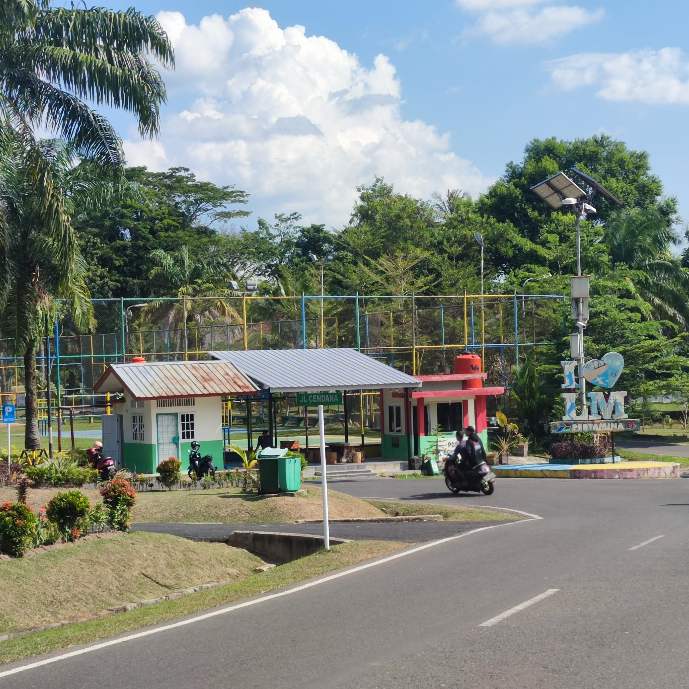

Kebun Nanas
Kebun Nanas yang biasa dipanggil agrowisata edukasi Prabumulih atau
agrowisata nanas yang terletak di Kelurahan Karang Jaya, Kecamatan Prabumulih Timur, Kota Prabumulih
Citimall
Citimall adalah tempat perbelanjaan modern yang ada di Prabumulih. Banyak penduduk Prabumulih
pergi kesini untuk berbelanja baju, menonton bioskop, ataupun berbelanja kebutuhan sehari-hari.

Lamir
Lamir atau lapangan miring adalah tempat yang biasa dijadikan untuk melakukan berbagai macam kegiatan olahraga